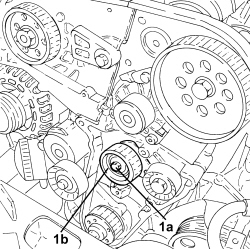
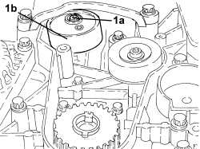

1032C10 TIMING SYSTEM MOVING TENSIONER - R.R WITH TIMING BELT/CHAIN REMOVED
- Path
- Procedures > 10 ENGINE > 1032 TIMING SYSTEM > 1032C TIMING SYSTEM TENSIONERS > 1032C10 TIMING SYSTEM MOVING TENSIONER - R.R WITH TIMING BELT/CHAIN REMOVED
- Kind
- repair procedure (removal / refitting; the operation number is the code)
- Applies to
- engines: 1.8, 1.9 JTD 8v, 1.9 JTD 16v, 2.4 JTD 20v; all production periods
- Interactive page
- https://sloeber94.github.io/elrnDB-fCrm/en/#/194002144
Applies to: engines: 1.9 JTD 8v, 1.9 JTD 16v; all production periods
 Removing
Removing
 Refitting
Refitting1. Undo the bolt (1a) loosened previously completely and remove the mobile timing belt tensioner (1b).

Applies to: engines: 1.9 JTD 8v, 1.9 JTD 16v; all production periods
Refitting
Removing- Reposition the moving timing system tensioner in its housing and secure it without tightening the bolt.
Applies to: engines: 2.4 JTD 20v; all production periods
- On this version it is not possible to remove/refit the mobile timing belt tensioner on the car.
To perform this operation, remove/refit the power unit
Op. 1004B14 POWER UNIT WITH AUTOMATIC TRANSMISSION R + R
and then work at the bench, customising the engine service procedures for this operation.
Applies to: engines: 1.8; all production periods
Removing
Refitting1. Undo the bolt (1a) and remove the moving tensioner (1b).

Applies to: engines: 1.8; all production periods
Refitting
Removing- Place the moving tensioner in position taking care to fit the free end of the spring in the special groove in the crankshaft oil seal cover.
- Tighten the moving tensioner retaining bollt to the recommended torque.
Component | Fastening | dia | Value (daNm) | Validity |
|---|---|---|---|---|
Timing moving tensioner | Bolt | - | 2.0 | 1.8 |
Topics linked from this page (1)
Topics that link to this page (6)
- 1020D10 FRONT CRANKSHAFT OIL SEAL COVER - R + R AND REPLACE SEALS WITH TIMING BELT REMOVED
- 1032C18 TIMING BELT MOVING TENSIONER - R.R.
- 1032D31 PROTECTIVE TIMING INNER COVER - R.R. WITH TIMING BELT REMOVED
- 1036C10 CAMSHAFTS IN CAMSHAFT HOUSING - R.R - INCLUDES CAMSHAFT HOUSING REPLACEMENT, IF NECESSARY
- 1036C30 CAMSHAFT FRONT OIL SEAL IN CYLINDER HEAD - REPLACEMENT WITH TIMING BELT REMOVED
- 1036H10 VALVE TAPPETS - CHECK AND ADJUST CLEARANCE, IF NECESSARY